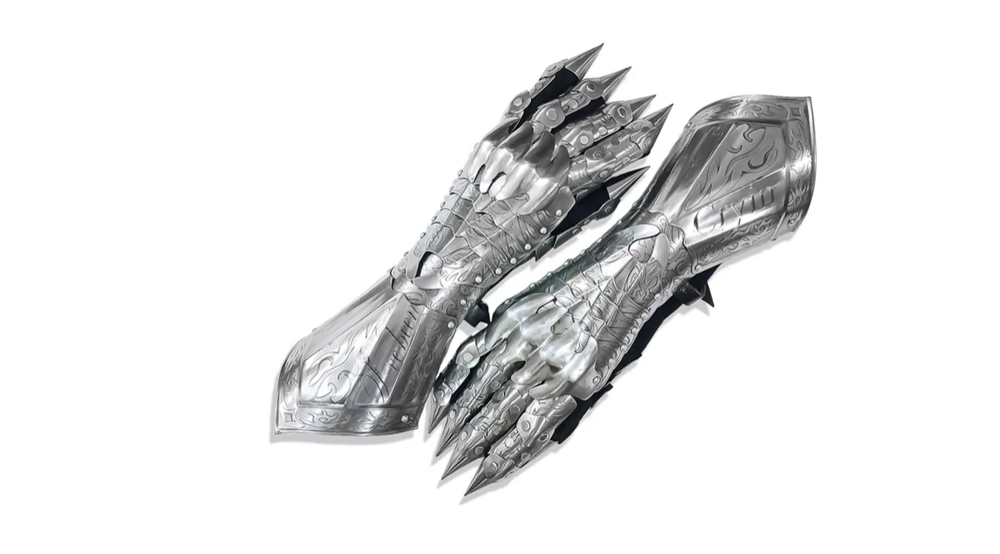
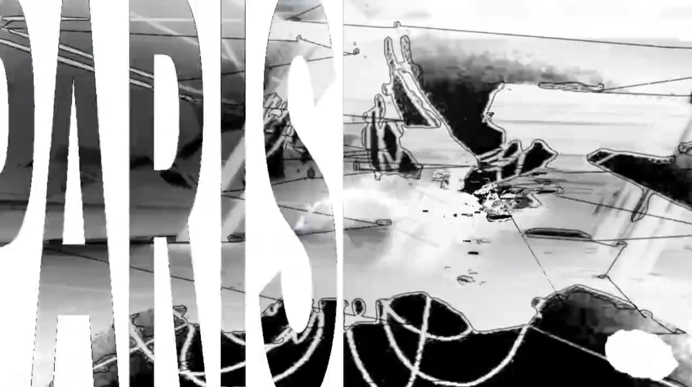

BERLIN
experimental music video built around amne’s sonic world, mixing audio-driven generative visuals created in TouchDesigner with photo and video editing.
the visuals evolve with the music, creating a shifting exploration of identity where sound and image merge to express the track’s energy.
software: After Effect | Touch Designer | Photoshop



